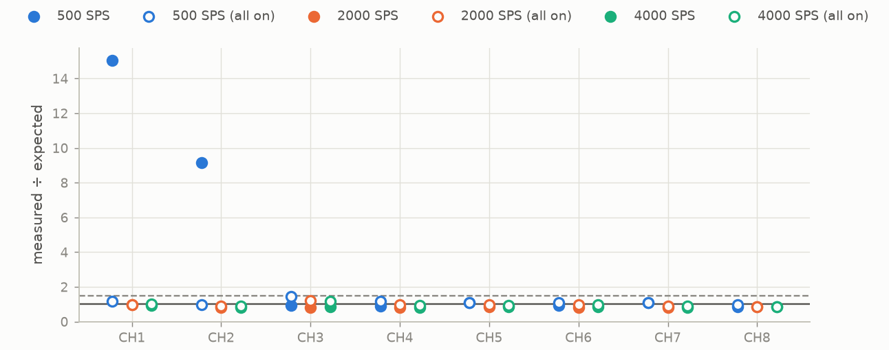

ADS1298 clamshell validation
Things to look at
- ✕ FAIL A — 500 SPS: median 0.62 µVrms, 1.09× expected (worst 15.06×); noisiest CH1 at 8.53 µVrms
- ! WARN A — 2 channel captures have a pp/rms well above what Gaussian noise gives: spikes or bursts, not pure random noise. See Experiment F (aggressors).
- ! WARN A — 2000 SPS: median 0.994 µVrms, 0.88× expected (worst 1.23×)
- ! WARN A — 4000 SPS: median 1.4 µVrms, 0.88× expected (worst 1.17×)
A · Shorted-input noise floor
✕ FAILMeasure the intrinsic noise of the ADS1298 as mounted on your board, with the inputs shorted inside the chip. Every other experiment is compared against this baseline.
CHnSET MUX = 001 (input shorted), internal 2.4 V reference, HR mode. Input-referred µVrms, µVpp, pp/rms and offset per channel, compared with the datasheet noise level.
- ✕ FAIL500 SPS: median 0.62 µVrms, 1.09× expected (worst 15.06×); noisiest CH1 at 8.53 µVrms
- ! WARN2000 SPS: median 0.994 µVrms, 0.88× expected (worst 1.23×)
- ! WARN4000 SPS: median 1.4 µVrms, 0.88× expected (worst 1.17×)
- ! WARN2 channel captures have a pp/rms well above what Gaussian noise gives: spikes or bursts, not pure random noise. See Experiment F (aggressors).

Noise per channel (input-referred) (48 rows)
| Rate | Plan | Ch | Offset (µV) | Noise (µVrms) | Noise (µVpp) | pp/rms | Expected (µVrms) | Measured ÷ expected | Verdict |
|---|---|---|---|---|---|---|---|---|---|
| 500 | each | 1 | -217 | 8.53 | 48.3 | 5.7 | 0.566 | 15 | ✕ FAIL |
| 500 | each | 2 | -109 | 5.18 | 18.8 | 3.6 | 0.566 | 9.1 | ✕ FAIL |
| 500 | each | 3 | -150 | 0.536 | 3.86 | 7.2 | 0.566 | 0.95 | ✓ PASS |
| 500 | each | 4 | 14.4 | 0.509 | 3.58 | 7 | 0.566 | 0.9 | ✓ PASS |
| 500 | each | 5 | 67.9 | 0.621 | 5.15 | 8.3 | 0.566 | 1.1 | ✓ PASS |
| 500 | each | 6 | 77.1 | 0.539 | 3.77 | 7 | 0.566 | 0.95 | ✓ PASS |
| 500 | each | 7 | -102 | 0.62 | 3.96 | 6.4 | 0.566 | 1.1 | ✓ PASS |
| 500 | each | 8 | -344 | 0.488 | 3.48 | 7.1 | 0.566 | 0.86 | ✓ PASS |
| 500 | all | 1 | -104 | 0.675 | 5.05 | 7.5 | 0.566 | 1.2 | ✓ PASS |
| 500 | all | 2 | -115 | 0.544 | 3.91 | 7.2 | 0.566 | 0.96 | ✓ PASS |
| 500 | all | 3 | -279 | 0.828 | 6.01 | 7.3 | 0.566 | 1.5 | ✓ PASS |
| 500 | all | 4 | 28.4 | 0.672 | 4.86 | 7.2 | 0.566 | 1.2 | ✓ PASS |
| 500 | all | 5 | -14.2 | 0.629 | 4.72 | 7.5 | 0.566 | 1.1 | ✓ PASS |
| 500 | all | 6 | 165 | 0.62 | 4.53 | 7.3 | 0.566 | 1.1 | ✓ PASS |
| 500 | all | 7 | -119 | 0.629 | 4.53 | 7.2 | 0.566 | 1.1 | ✓ PASS |
| 500 | all | 8 | -359 | 0.555 | 3.67 | 6.6 | 0.566 | 0.98 | ✓ PASS |
| 2000 | each | 1 | -192 | 1.09 | 12.1 | 11 | 1.13 | 0.96 | ! WARN |
| 2000 | each | 2 | -115 | 0.919 | 6.91 | 7.5 | 1.13 | 0.81 | ✓ PASS |
| 2000 | each | 3 | -149 | 0.919 | 7.92 | 8.6 | 1.13 | 0.81 | ✓ PASS |
| 2000 | each | 4 | 13.4 | 0.939 | 8.2 | 8.7 | 1.13 | 0.83 | ✓ PASS |
| 2000 | each | 5 | 67.8 | 0.957 | 8.11 | 8.5 | 1.13 | 0.84 | ✓ PASS |
| 2000 | each | 6 | 77.5 | 0.937 | 7.63 | 8.1 | 1.13 | 0.83 | ✓ PASS |
| 2000 | each | 7 | -102 | 0.942 | 7.53 | 8 | 1.13 | 0.83 | ✓ PASS |
| 2000 | each | 8 | -344 | 0.95 | 7.2 | 7.6 | 1.13 | 0.84 | ✓ PASS |
| 2000 | all | 1 | -103 | 1.13 | 9.3 | 8.3 | 1.13 | 0.99 | ✓ PASS |
| 2000 | all | 2 | -115 | 1 | 8.34 | 8.3 | 1.13 | 0.89 | ✓ PASS |
| 2000 | all | 3 | -279 | 1.39 | 10.3 | 7.4 | 1.13 | 1.2 | ✓ PASS |
| 2000 | all | 4 | 28.2 | 1.11 | 8.34 | 7.5 | 1.13 | 0.98 | ✓ PASS |
| 2000 | all | 5 | -14.1 | 1.09 | 8.77 | 8 | 1.13 | 0.97 | ✓ PASS |
| 2000 | all | 6 | 165 | 1.11 | 9.11 | 8.2 | 1.13 | 0.98 | ✓ PASS |
| 2000 | all | 7 | -119 | 1.03 | 8.44 | 8.2 | 1.13 | 0.91 | ✓ PASS |
| 2000 | all | 8 | -359 | 0.985 | 8.06 | 8.2 | 1.13 | 0.87 | ✓ PASS |
| 4000 | each | 1 | -192 | 1.52 | 17.5 | 11 | 1.6 | 0.95 | ! WARN |
| 4000 | each | 2 | -115 | 1.34 | 11.4 | 8.6 | 1.6 | 0.83 | ✓ PASS |
| 4000 | each | 3 | -149 | 1.37 | 10.8 | 7.9 | 1.6 | 0.85 | ✓ PASS |
| 4000 | each | 4 | 13.4 | 1.33 | 11.6 | 8.7 | 1.6 | 0.83 | ✓ PASS |
| 4000 | each | 5 | 67.3 | 1.35 | 10.8 | 8 | 1.6 | 0.84 | ✓ PASS |
| 4000 | each | 6 | 77.2 | 1.36 | 12.3 | 9 | 1.6 | 0.85 | ✓ PASS |
| 4000 | each | 7 | -101 | 1.33 | 11.1 | 8.3 | 1.6 | 0.83 | ✓ PASS |
| 4000 | each | 8 | -344 | 1.35 | 11.1 | 8.2 | 1.6 | 0.84 | ✓ PASS |
| 4000 | all | 1 | -104 | 1.61 | 12.5 | 7.8 | 1.6 | 1 | ✓ PASS |
| 4000 | all | 2 | -115 | 1.42 | 12 | 8.4 | 1.6 | 0.89 | ✓ PASS |
| 4000 | all | 3 | -278 | 1.88 | 15.6 | 8.3 | 1.6 | 1.2 | ✓ PASS |
| 4000 | all | 4 | 28.1 | 1.51 | 13.3 | 8.8 | 1.6 | 0.94 | ✓ PASS |
| 4000 | all | 5 | -14 | 1.51 | 12.7 | 8.4 | 1.6 | 0.94 | ✓ PASS |
| 4000 | all | 6 | 165 | 1.53 | 12.9 | 8.4 | 1.6 | 0.96 | ✓ PASS |
| 4000 | all | 7 | -118 | 1.43 | 11 | 7.7 | 1.6 | 0.89 | ✓ PASS |
| 4000 | all | 8 | -359 | 1.39 | 12 | 8.7 | 1.6 | 0.86 | ✓ PASS |
Expected value: estimate from 4 uVpp @150 Hz headline. Thresholds: [A] warn_ratio / fail_ratio / pp_rms_margin in test_plan.toml. pp/rms is compared with what pure Gaussian noise gives for the same number of samples (≈6.4 at 1 500, ≈8.1 at 40 000).
Does turning all channels on change the noise?
| Rate | Ch | Alone (µVrms) | All on (µVrms) | All ÷ alone | Verdict |
|---|---|---|---|---|---|
| 500 | 1 | 8.53 | 0.675 | 0.0791 | ✕ FAIL |
| 500 | 2 | 5.18 | 0.544 | 0.105 | ✕ FAIL |
| 500 | 3 | 0.536 | 0.828 | 1.55 | ✕ FAIL |
| 500 | 4 | 0.509 | 0.672 | 1.32 | ! WARN |
| 500 | 5 | 0.621 | 0.629 | 1.01 | ✓ PASS |
| 500 | 6 | 0.539 | 0.62 | 1.15 | ✓ PASS |
| 500 | 7 | 0.62 | 0.629 | 1.01 | ✓ PASS |
| 500 | 8 | 0.488 | 0.555 | 1.14 | ✓ PASS |
| 2000 | 1 | 1.09 | 1.13 | 1.03 | ✓ PASS |
| 2000 | 2 | 0.919 | 1 | 1.09 | ✓ PASS |
| 2000 | 3 | 0.919 | 1.39 | 1.51 | ✕ FAIL |
| 2000 | 4 | 0.939 | 1.11 | 1.19 | ✓ PASS |
| 2000 | 5 | 0.957 | 1.09 | 1.14 | ✓ PASS |
| 2000 | 6 | 0.937 | 1.11 | 1.19 | ✓ PASS |
| 2000 | 7 | 0.942 | 1.03 | 1.1 | ✓ PASS |
| 2000 | 8 | 0.95 | 0.985 | 1.04 | ✓ PASS |
| 4000 | 1 | 1.52 | 1.61 | 1.05 | ✓ PASS |
| 4000 | 2 | 1.34 | 1.42 | 1.07 | ✓ PASS |
| 4000 | 3 | 1.37 | 1.88 | 1.37 | ! WARN |
| 4000 | 4 | 1.33 | 1.51 | 1.14 | ✓ PASS |
| 4000 | 5 | 1.35 | 1.51 | 1.12 | ✓ PASS |
| 4000 | 6 | 1.36 | 1.53 | 1.13 | ✓ PASS |
| 4000 | 7 | 1.33 | 1.43 | 1.07 | ✓ PASS |
| 4000 | 8 | 1.35 | 1.39 | 1.03 | ✓ PASS |
Should be ~1.0. More than 20 % different points to shared supply/reference loading.
Run details
| Run | 2026-11-16_185015 |
|---|---|
| Source | hardware on /dev/cu.usbserial-1140 |
| Captures | 27 |
| Device ID | 0x92 |
| Firmware | clamshell-suite-1.0 |
| Rates | 500, 2000, 4000 |
| Channels | 1, 2, 3, 4, 5, 6, 7, 8 |
| Channel plan | each, all |
| Capture length (s) | 10 |
| Mains (Hz) | 50 |
| Experiments | A |
| Registers after run | 92 83 01 C0 00 01 01 01 01 01 01 01 01 00 00 00 00 00 00 00 0F 00 00 00 00 00 |